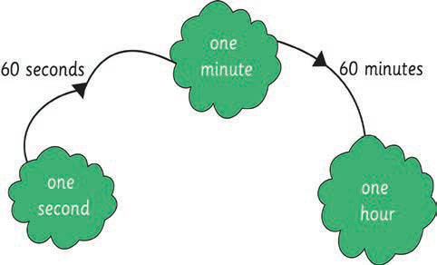

Chapter Six
Measurements of time
Introduction
In this chapter, you will learn about time measurements. You will read the time in 12-hour and 24-hour formats. You will also learn how to recognise the number of hours in a day, days in a week, weeks in a month, and months in a year. The competencies developed will enable you to manage time and be punctual in various scheduled activities. Examples of such activities include keeping a record of school, media and transport schedules.
Units of time
Time is measured in seconds, minutes, hours, days, weeks, months or years. The relationship between the units of time is as follows:
- (a) There are 60 seconds in one minute.
- (b) There are 60 minutes in one hour.
- (c) There are 24 hours in one day.
- (d) There are 7 days in one week.
- (e) There are 12 months in one year.

60 seconds
one second
one minute
60 minutes
one hour